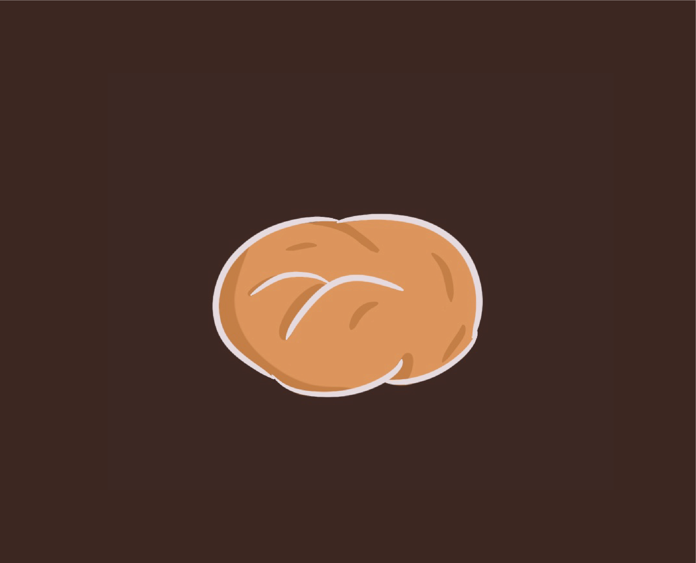

|
«Тыквенный пай» |
Ингредиенты |
- Для теста:
- 225 г. муки
- 30 г. сахарной пудры
- щепотка соли
- 145 г. сливочного масла
- 45 мл. ледяной воды
- 10 г. сока лимона
|
- Для начинки:
- 500 г. тыквенного пюре
- 3 шт. яиц
- 55 г. коричневого сахара
- 50 г. белого сахара
- смесь специй
- 160 г. сливок
- 2 ст. л. кукурузного крахмала
- лимонная цедра
|
- Специи:
- 1/2 ч.л. корицы
- 1/2 ч.л. имбиря
- 1/2 ч.л. кардамона
- 1/4 ч.л. мускатного ореха
|
Приготовление |
- Тыкву разрезать на удобные сегменты, очистить от семян и кожуры, порезать небольшими
кубиками, выложить в кастрюлю, залить водой, поставить вариться до мягкости.
|
 |
- Пока варится тыква, можно приготовить тесто для основы. В миску просеять муку,
добавить соль и сахарную пудру. Выжать из лимона сок и тут же натереть цедру с этого же лимона на мелкой
терке (цедра пойдет в начинку). Сок лимона добавить в емкость к ледяной воде и перемешать.
|
|
- Ледяное масло порезать мелким кубиком и закинуть к просеянной муке. Быстро
перетереть муку с кубиками ледяного масла в крошку.Залить к мучной крошке ледяную лимонную воду и руками
замесить мягкое тесто, собрать его в шар, завернуть в пищевую пленку и на 20 минут положить на полку
холодильника.
|
|
- Затем охлажденное тесто раскатать скалкой в пласт, соизмеримый с размером
формы плюс бортики 4 см, и перенести на скалке в форму, застеленную пергаментом для выпечки.
Горизонтальную поверхность теста наколоть вилкой. На дно заготовки из теста положить кусочек пищевого
пергамента, на который насыпать груз, например, фасоль. Форму с основой под гнетом поставить в уже
раскаленную до 180 градусов духовку на 10 минут.
|
|
- Приготовим тыквенную начинку. Выложим в миску отваренные кусочки тыквы. Погружным
блендером пробьем тыкву до получения однородного пюре - его должно получиться 500 г. В отдельную миску
вбить яйца, засыпать белый и коричневый сахар. Хорошо взбить ингредиенты венчиком.
|
|
- Добавить к яичной
смеси сливки и крахмал, опять энергично перемешать все венчиком. К смеси добавить корицу, мускатный орех,
молотый кардамон, молотый имбирь. Перемешать. Добавить тыквенное пюре к этой смеси. Перемешать до
получения однородной смеси, добавить лимонную цедру.
|
|
- Приготовленную тыквенную начинку залить на
подпеченную основу. Поставить заполненную форму в заранее разогретую до 180 градусов духовку на 40-45 минут.
|
|
Видео-рецепт
|